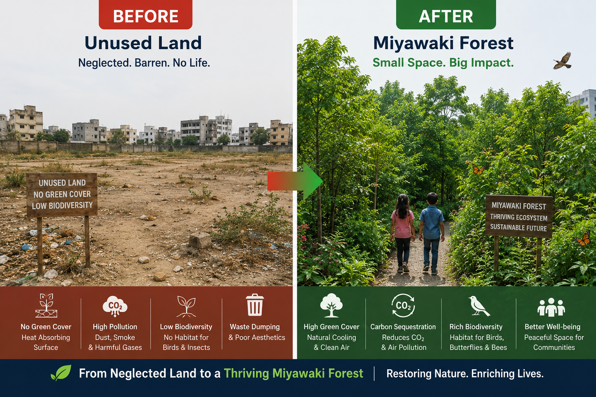

Impact Story: Miyawaki Forestation

A focused community drive helped launch dense plantation work using the Miyawaki method to restore green cover faster.
Before: Underused patches and low tree density in target areas.
After: Native plantation activity started with local participation to save the environment.